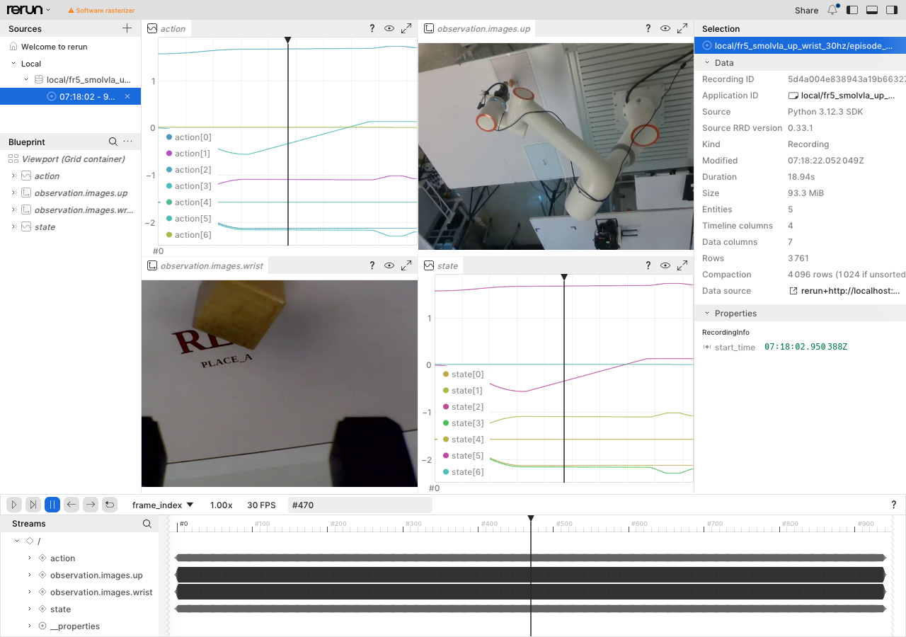
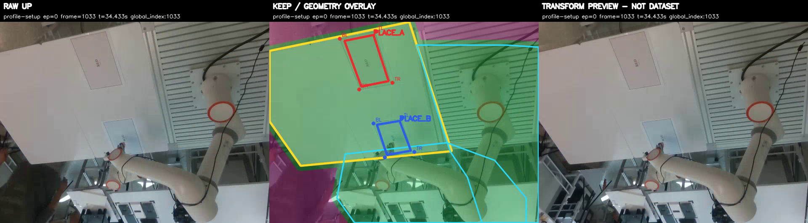

기록과 검토
Recorder · Curator
두 카메라와 로봇 신호를 시간에 맞춰 저장하고, 기록된 영상과 변환 후보를 검토하는 시스템이다. Recorder는 LeRobot Dataset을 만들고, Curator는 원본과 변환 후보를 비교한다. Training Review에서는 학습 대상에 포함된 시연을 Rerun으로 탐색한다.
저장 관측
24mm 나무 큐브 집기 · 저장 데이터의 일부

집기 시연 · 첫 표본 · 저장 관측을 불러오는 중
원본과 추출 범위 ↗같은 관측의 로봇 상태
여섯 관절 각도는 rad, 그리퍼 상태는 m 단위이다. 표시된 값은 관측 상태이며 정책의 예측 동작과 구분한다.
각 시연 길이의 10%·50%·90% 위치에서 추출한 저장 관측이다. 연속 재생 영상이 아니며 학습 정책의 실물 실행 결과와 구분한다.
Training Review
NativeInspection · Rerun 탐색
Training Review에서 선택한 시연을 NativeInspection이 Rerun으로 연결한다. 같은 시점의 두 카메라 영상과 동작·상태 신호를 살펴본 뒤, 원래 데이터의 검토 화면으로 돌아온다.

Rerun의 타임라인을 움직이면 두 영상과 관절·그리퍼 신호를 같은 시점에서 볼 수 있다. FR5는 학습 검토 목록에서 고른 시연을 연결하고, 탐색 전후에 원본 데이터가 바뀌지 않았는지 확인한다.
그래프의 action/state [0–5]는 여섯 관절, [6]은 그리퍼이다. 데이터 탐색은 읽기 전용이며 검토 결정을 변경하지 않는다.
영상과 신호의 시간축
타임라인 재생·이동, 영상 패널, 상태·동작 그래프를 제공한다.
선택한 데이터와 원본 대응
선택 목록과 데이터 식별값을 확인하고 원본 프레임 대응을 보존한다. 탐색을 닫으면 같은 검토 대상으로 돌아간다.
Recorder
시간 정렬 모듈
카메라와 로봇 신호는 서로 다른 시점에 도착한다. 기록기는 ROS 기준 시점마다 신호 종류에 맞는 정렬 방식을 적용해 하나의 데이터 행을 구성한다.

각 행에는 관측 상태와 목표 동작, 두 카메라 영상이 함께 저장된다. 신호의 허용 시간차와 영상 전송 지연을 확인하며, 정렬에 사용한 원래 시각도 기록한다.
신호의 성질에 맞춘 시간 정렬
카메라와 로봇 신호는 서로 다른 주기로 도착한다. 기록기는 공통 시각 t를 정한 뒤, 각 버퍼에서 그 시각을 설명할 표본을 고른다. 같은 행에 들어간 값은 단순히 동시에 도착한 값이 아니라, 같은 관측 시각에 맞춘 값이다.
| 신호 | 정렬 방법 | 적용 이유 |
|---|---|---|
| 관절 상태·팔 명령 | 앞뒤 표본의 선형 보간 | 두 표본 사이에서 연속적으로 변하는 값을 목표 시각에 맞춘다. |
| 그리퍼 명령 | 목표 시각 이전의 최신 값 | 새 명령이 올 때까지 유지되는 명령의 성질을 반영한다. |
| 카메라 영상 | 목표 시각과 가장 가까운 프레임 | 실제로 촬영된 영상을 사용하며 두 영상의 픽셀을 섞지 않는다. |
q(t) = q₀ + (t − t₀) / (t₁ − t₀) × (q₁ − q₀)
t₀·t₁은 목표 시각을 둘러싼 표본 시각, q₀·q₁은 해당 값이다.앞뒤 표본이 없거나 허용한 시간 간격을 넘으면 그 행을 유효한 관측으로 만들지 않는다. 영상은 목표 시각과의 차이뿐 아니라 수신 지연도 검사한다. 데이터에는 선택한 원래 시각을 함께 남겨 정렬 결과를 다시 확인할 수 있다.
동기화 사양과 구현
관절 상태와 팔 목표 동작은 기준 시점 앞뒤 표본이 모두 있어야 보간한다. 그리퍼는 기준 시점 이전 최신 명령을 사용한다. 필요한 신호가 없거나 허용 시간차·전송 지연을 벗어나면 해당 행을 만들지 않고 원인을 기록한다.
시간 정렬 함수와 기록기 코드 ↗Curator
Video Transform
Curator는 데이터 원본과 변환 후보를 비교하고 보존할 결과를 선택하는 모듈이다. 같은 시점의 원본 영상, 보존 영역과 변환 결과를 나란히 표시한다.
작업 영역 보존과 배경 치환
작업대와 로봇이 움직이는 영역은 원래 영상을 유지하고, 그 밖의 영역은 여러 표본에서 만든 고정 배경으로 바꾼다. 아래는 사람이 작업 영역 밖으로 들어온 시점의 원본과, 같은 프레임에 변환을 적용한 미리보기이다.

고정된 보존 영역 밖의 픽셀을 바꾸는 방식이다. 사람을 인식해 지우는 모델은 사용하지 않는다. 동일 시점의 원본과 추출 정보 ↗
다른 시점에서도 비교하기 · 31개 표본
원본·영역 표시·변환 결과를 함께 볼 수 있다. 서로 떨어진 31개 프레임을 10 fps로 묶은 검토 영상이며, 연속된 로봇 동작 영상은 아니다.
마스크와 고정 배경의 합성
보존 마스크 M은 원래 픽셀을 남길 위치를 나타낸다. 작업대와 로봇 동작 영역을 합치고 경계에 여유 폭을 더해 마스크를 만든다. 마스크 밖에는 여러 표본의 같은 픽셀 위치에서 계산한 중앙값 배경 B를 사용한다. 한 표본에만 나타난 물체나 순간 변화가 배경에 반영되는 영향을 줄이는 방법이다.
I출력 = M × I원본 + (1 − M) × B
M = 1인 영역은 원본 유지, M = 0인 영역은 고정 배경 사용.로봇이 움직이는 부분까지 배경으로 바꾸면 학습에 필요한 동작 단서를 잃는다. 따라서 배경을 넓게 지우는 것보다 작업에 필요한 영역을 충분히 보존하는 것이 설정의 핵심이다. 위 세 화면과 표본 영상은 이 경계를 확인하기 위한 자료이다.
마스크·중앙값 배경·합성 구현 ↗후보 검토 화면 · 합성 데이터 실행 예시

세 화면 동시 비교
원본, 보존 영역 표시, 실제 변환 후보를 같은 프레임으로 비교한다. 변환 후 필요한 작업 영역이 남아 있는지 확인한다.
표본 장면 탐색
장면 목록에서 검토할 시점으로 이동한다. 화면에는 선택한 표본의 범위와 원본 시점을 함께 표시한다.
원본 보존과 후보 관리
사용자가 선택한 후보의 결과와 원본 참조를 저장한다. 후보 보존 결정과 학습 사용 승인은 별도로 관리한다.
데이터 검사와 실행 근거
수집 데이터의 기술 검사는 영상 디코딩·행 구조·시간 정보를 확인한다. 사람이 판정하는 작업 수행 여부와는 별도로 기록한다. 접힌 후보 검토 화면은 합성 데이터의 제품 동작 예시이며, 실제 FR5 영상의 변환 품질이나 학습 개선 결과가 아니다.
화면과 실행 기록 ↗ · 저장 데이터 품질 검사 ↗ · 기술·작업 의미 판정 구현 ↗관련 시스템
기록의 앞OneJob · Recorder
작업 실행부터 기록 확정까지의 상태 관리.
Training Entrypoint
승인 목록·데이터 분할·학습 receipt의 결속.